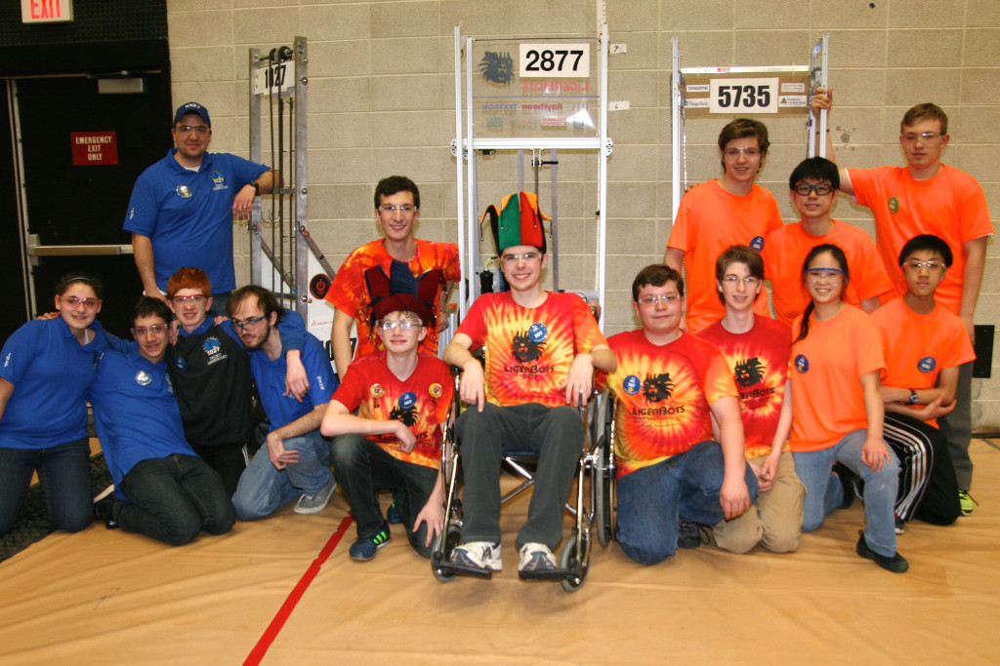

<?xml version="1.0" encoding="UTF-8"?><rss version="2.0"
	xmlns:content="http://purl.org/rss/1.0/modules/content/"
	xmlns:wfw="http://wellformedweb.org/CommentAPI/"
	xmlns:dc="http://purl.org/dc/elements/1.1/"
	xmlns:atom="http://www.w3.org/2005/Atom"
	xmlns:sy="http://purl.org/rss/1.0/modules/syndication/"
	xmlns:slash="http://purl.org/rss/1.0/modules/slash/"
	>

<channel>
	<title>LigerBlog &#187; Competition</title>
	<atom:link href="http://ligerbots.org/ligerblog/category/competition/feed/" rel="self" type="application/rss+xml" />
	<link>http://ligerbots.org/ligerblog</link>
	<description>FRC Team 2877 Blog</description>
	<lastBuildDate>Sun, 22 Mar 2015 02:19:08 +0000</lastBuildDate>
	<language>en-US</language>
	<sy:updatePeriod>hourly</sy:updatePeriod>
	<sy:updateFrequency>1</sy:updateFrequency>
	<generator>http://wordpress.org/?v=4.3.1</generator>
	<item>
		<title>How we did at Dartmouth</title>
		<link>http://ligerbots.org/ligerblog/2015/03/how-we-did-at-dartmouth/</link>
		<comments>http://ligerbots.org/ligerblog/2015/03/how-we-did-at-dartmouth/#comments</comments>
		<pubDate>Sun, 15 Mar 2015 22:59:15 +0000</pubDate>
		<dc:creator><![CDATA[Ilias Vamvakas]]></dc:creator>
				<category><![CDATA[Business]]></category>
		<category><![CDATA[Competition]]></category>
		<category><![CDATA[Outreach]]></category>
		<category><![CDATA[Programming]]></category>
		<category><![CDATA[Robot Build]]></category>

		<guid isPermaLink="false">http://ligerbots.org/ligerblog/?p=73</guid>
		<description><![CDATA[This weekend at UMass Dartmouth, the Newton LigerBots Team #2877 turned in an excellent performance in their first district meet of the 2015 FIRST Robotics Competition season. We made it to semifinals with our alliance finishing third in the tournament. We won the District Chairman&#8217;s Award,  this automatically qualifies us to compete in the District Championship in April, for the chance &#8230; <a href="http://ligerbots.org/ligerblog/2015/03/how-we-did-at-dartmouth/" class="more-link">Continue reading <span class="screen-reader-text">How we did at Dartmouth</span></a>]]></description>
				<content:encoded><![CDATA[<p>This weekend at UMass Dartmouth, the Newton LigerBots Team #2877 turned in an excellent performance in their first district meet of the 2015 <em>FIRST</em> Robotics Competition season.</p>
<ul>
<li>We made it to semifinals with our alliance finishing third in the tournament.</li>
<li>We won the District Chairman&#8217;s Award,  this automatically qualifies us to compete in the District Championship in April, for the chance to advance to the <em>FIRST</em> World Championships later this spring.</li>
<li>Three members of the team won nominations to advance in the district-wide competitions for individual awards:
<ul>
<li>Head coach <strong>Charles Hurwitz</strong> will now advance to the district championship level for the Woodie Flowers Award</li>
<li><strong>Max Tepermeister</strong> and <strong>Ilias Vamvakas</strong> will now advance to the district championship level for the Dean’s List Award</li>
</ul>
</li>
</ul>
<p>Currently, the LigerBots are ranked 44th out of 175 teams in New England, with one more tournament to be played on <strong>March 27-28</strong> at Northeastern and then the District Championship at WPI on <strong>April 9-11</strong>.  As always, these competitions are a blast for spectators, too.  Come down to Northeastern or WPI to cheer us on!</p>
<p>A special thanks to teams 5735, The Control Freaks,  and 1027, Project Jabberwocky for their help in our elimination alliance.</p>
<figure id="attachment_75" style="width: 660px;" class="wp-caption aligncenter"><a href="../../../wp-content/uploads/2015/03/3-Drive-teams-Dartmouth.jpg"></a><figcaption class="wp-caption-text">The drive teams of teams from our elimination alliance.</figcaption></figure>
]]></content:encoded>
			<wfw:commentRss>http://ligerbots.org/ligerblog/2015/03/how-we-did-at-dartmouth/feed/</wfw:commentRss>
		<slash:comments>0</slash:comments>
		</item>
	</channel>
</rss>

<!-- Localized -->